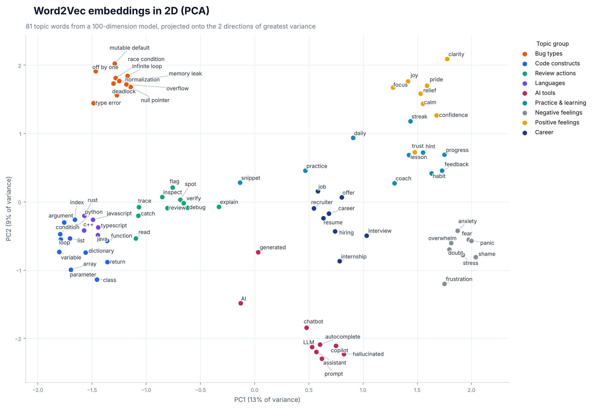
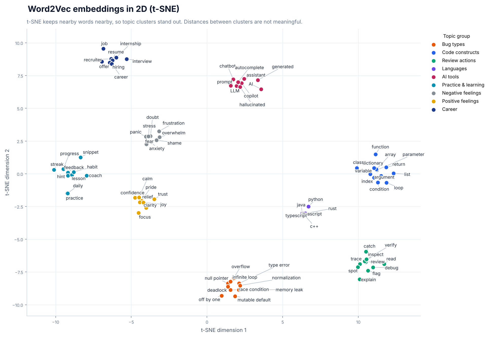
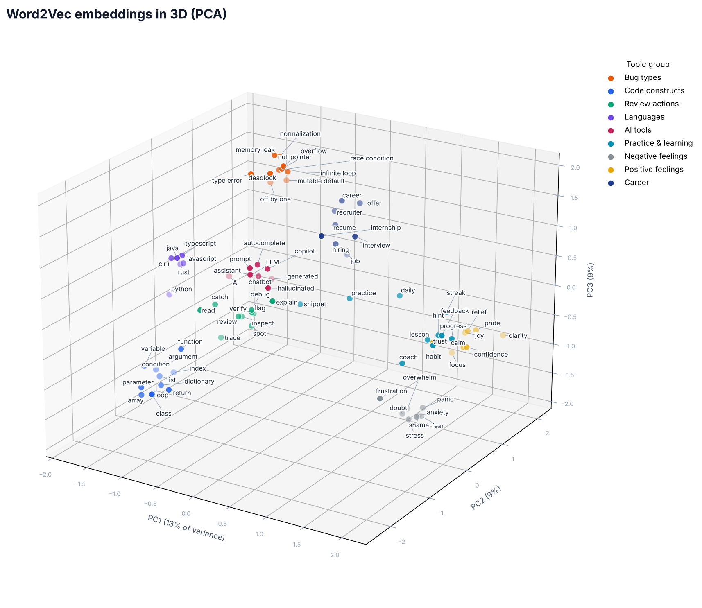
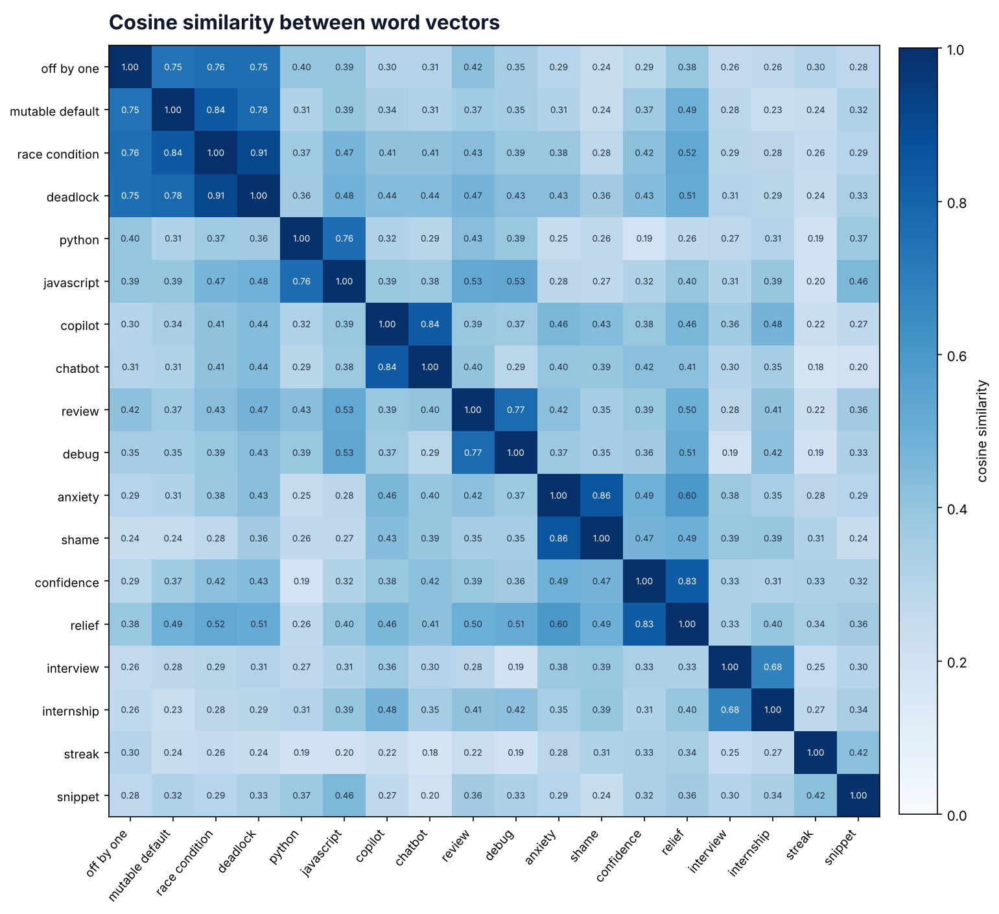

The training data
The corpus has two parts:
1. The real course document. The Linewise NLP prompt chain (avatar research, diary entries, brand system and product requirements), split into 618 sentences. It is only about 8,000 words, which is too little to train stable vectors on its own, so it is repeated 3 times to give it more weight.
2. 5,040 template-generated sentences about the same subject: bug types, code constructs, review actions, programming languages, AI tools, practice habits, feelings and careers.
Honesty note: the generated sentences are synthetic. They are not real user data. Each template drops words from one topic group into the same kinds of sentences, so words in a group are used in similar contexts by design. That is why the topic clusters in the graphs below are so clean: the model is partly recovering the groups the templates put in.
Multi-word terms are joined with underscores so the model treats them as one token, for example off by one → off_by_one and C++ → cpp.
Corpus stats
Training parameters
Trained with gensim’s Word2Vec.
vector_size = 100numbers per wordwindow = 5context words on each sidemin_count = 3drop rarer wordssg = 1skip-gramnegative = 10negative samplesepochs = 40passes over the corpusseed = 42for reproducibility
2D views
Each vector has 100 dimensions, so to draw it we squash it down to two. Both plots show the same 81 topic words, colored by the topic group they came from.


3D views
The same PCA projection with a third axis (8.7% more variance, about 30.7% in total). The interactive version needs JavaScript and loads Plotly from a CDN.
drag to rotatescroll to zoomhover for words
Plot not showing? Open the interactive 3D plot on its own page.

Similarity heatmap

python and javascript, anxiety and shame). 1.0 means the vectors point the same way; values near 0 mean unrelated. The darker blocks along the diagonal are words from the same topic; lighter squares elsewhere are words from different topics.What the model learned
All numbers are cosine similarities between word vectors (higher means more similar), copied from outputs/results.json.
Nearest neighbors
The six words whose vectors are closest to each probe word.
| Word | Nearest neighbors |
|---|---|
| off_by_one |
|
| mutable_default |
|
| race_condition |
|
| python |
|
| copilot |
|
| debug |
|
| anxiety |
|
| confidence |
|
| interview |
|
| streak |
|
Every probe word’s neighbors come from its own topic group, with a few leaks from the course document (clickable for python, calendar and bars for streak).
Analogies
“a is to b as c is to ?” is answered with the vector b − a + c and the closest words to it.
-
shame : pride :: anxiety : joySensible
Top 3:
joy0.826,relief0.814,calm0.764. Swapping a negative feeling for a positive one works. -
python : javascript :: java : cppSensible
Top 3:
cpp0.784,typescript0.754,rust0.746. The answer is another language, though there is no single “right” answer here. -
deadlock : thread :: off_by_one : sharedWeak
Top 3:
shared0.685,red0.68,mutable_defaults0.675.
Why the third one fails: we hoped for something like index or range (the thing an off-by-one bug is about, the way a deadlock is about threads). Instead the answers are a detail word from other bugs (shared), an unrelated word (red) and a plural spelling of another bug. The corpus is small and mostly templated, and all bug types share the same sentence templates, so their vectors are very close together. There is not enough varied text for a consistent “bug → what it involves” direction to form, so the arithmetic lands in a noisy spot.
Pair similarities
- anxiety · shame0.855
- anxiety · confidence0.49
- python · java0.755
- python · anxiety0.245
- off_by_one · range0.437
- deadlock · thread0.606
- copilot · chatbot0.836
- interview · internship0.68
Words from the same topic score high (anxiety · shame), opposite feelings score lower (anxiety · confidence), and words from unrelated topics score lowest (python · anxiety).
Cluster quality
How cleanly the 81 topic words separate into their 9 groups, measured in the full 100-dimensional space.
Ranges from −1 to 1; 0.512 means words sit clearly closer to their own group than to the nearest other group.
On average, two words from the same topic have a cosine similarity of 0.729.
Two words from different topics average only 0.377, about half the within-group value.
Run it yourself
From the word2vec/ folder. Building the corpus writes data/corpus.txt; training writes the model, these graphs and outputs/results.json.
$ pip install -r requirements.txt
$ python build_corpus.py
$ python train_word2vec.py